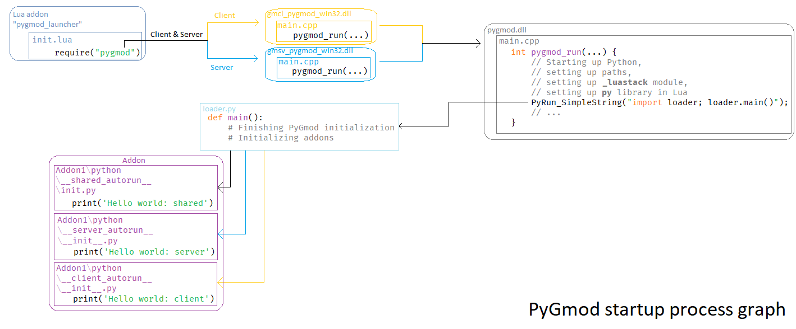

How PyGmod works¶
Startup¶
API levels¶
Let’s suppose we have a simple “Hello World” PyGmod addon:
addons\ ─┬─ example\ ─┬─ addon.json
... ├─ python\ ─── __shared_autorun__\ ─── __init__.py
__init__.py:
from gmod.luanamespace import *
from gmod.lua import luafunction
if SERVER:
@luafunction
def greet(new_player):
new_player._.ChatPrint('Hello, ' + new_player._.Nick() + '!') # <--
hook.Add('PlayerInitialSpawn', 'greet', greet)
else:
print('On client')
1. Lua Launcher¶
PyGmod’s Lua launcher is a regular Lua addon.
When it’s loaded by Garry’s Mod’s addon system, the launcher activates
gmcl_pygmod_win32.dll and gmsv_pygmod_win32.dll:
require 'pygmod'
gmcl_pygmod_win32.dll is for the client and gmsv_pygmod_win32.dll is for the server.
2. Realms’ DLLs: gmcl_pygmod_win32.dll and gmsv_pygmod_win32.dll¶
These two DLLs call pygmod_run() in pygmod.dll.
3. Main PyGmod DLL: pygmod.dll¶
pygmod_run() does these preparation operations:
Server¶
- Adds
luastackmodule to the builtin initialization table. - Initializes Python interpreter.
- Appends
garrysmod\pygmod\tosys.path. - Calls
setup()inluastackthus setting the global lua stack pointer and settingluastack.IN_GMODtoTrue. - Adds Lua2Python interoperability functions (using Python from Lua).
- Runs
main()inloader.py. - Saves the Lua state, so the realms be swapped during the work time.
Client¶
Client’s routine is the same as server’s except the step 2.
Instead of initializing Python again, a subinterpreter is created and swapped to.
4. loader.py¶
loader.py is the second part of the initialization system.
Here is what it does:
- Redirects I/O to Garry’s Mod console with
gmod.streamsI/O classes. - Scans
addons\directory for PyGmod addons and initializes them.
5. gmod.lua module¶
Player() returns gmod.lua.LuaObject.
gmod.lua module is itself a wrapper over the luastack module.
gmod.lua simplifies the interoperability with Lua
by providing the LuaObject class and the G singleton.
The LuaObject class internally uses the luastack module.
6. luastack module¶
luastack module manipulates the Lua stack directly. This is the most low-level way of interacting with Lua. Lua stack pointer is previously set by the C++ module.
And that’s it, our PyGmod addon is initialized. For me, Hello, Protocs! will be printed to the chat.